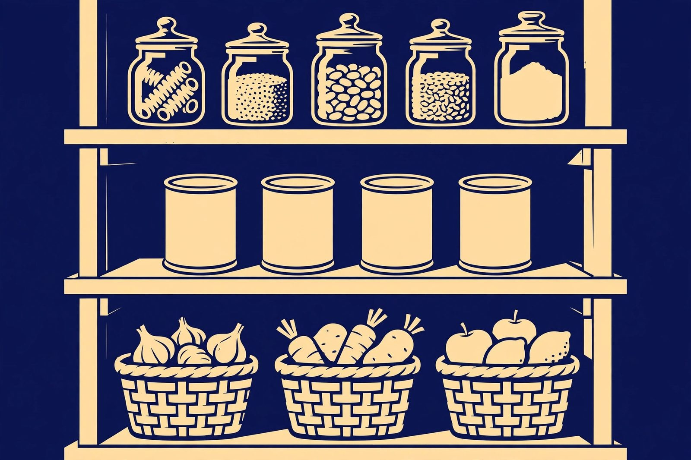

Shelving that makes a pantry actually usable

Most pantries fail for the same reason: deep shelves where cans and jars migrate to the back and disappear until they expire. A usable pantry isn't about more shelving — it's about the right depth, the right spacing, and a layout that keeps everything visible. Here's how to set one up.
Depth: shallower than you think
Pantry shelves are most usable at about 12–16 inches deep. That's enough for a row of cans or jars with a bit of room, but shallow enough that you can see and reach the back. Shelves deeper than that almost always become archaeological digs. If your pantry has very deep fixed shelves, add shelf-depth bins or risers so items sit at the front instead of vanishing behind.
For walk-in pantries, use the walls: narrow shelves (10–12 inches) around the perimeter give you far more usable storage than a few deep shelves in the middle.
Spacing: fit the shelves to the food
Adjustable shelves are worth it in a pantry. Spacing every shelf for your tallest item wastes enormous space — you end up with caverns of air above cans and boxes. A practical approach:
- Short spacing (6–8 inches) for cans, jars, and spices.
- Medium spacing (10–12 inches) for cereal boxes, pasta, and packaged goods.
- Tall spacing (14+ inches) for bulk items, appliances, and cleaning supplies — usually lowest, where the weight is easiest to manage.
Measure your actual tallest items before setting shelf heights. One tall shelf at the bottom and tighter shelves above fits most households better than evenly spaced shelves.
The back-of-the-shelf problem
Even with shallow shelves, some items need to be two deep. Four fixes:
- Step risers: tiered risers lift the back row so you can see it over the front row — classic for cans and spices.
- Pull-out drawers or baskets: a shelf you can pull toward you converts the whole depth into reachable storage. Especially useful for deep shelves you can't replace.
- Turntables (lazy Susans): a spin brings the back to the front. Great for oils, sauces, and condiments.
- Clear bins: group like items (baking supplies, snacks) in labeled bins you can pull out as a unit instead of rummaging.
Layout: organize by how you cook
- Daily items at eye level: the things you grab every day go where you see them without bending or reaching.
- Heavy items low: flour, rice, jugs of oil — low shelves or the floor. Less lifting, less risk of a heavy item falling from height.
- Rarely used up high: the holiday baking dishes and bulk overflow stock.
- One row of each item visible: if you can't see it, you'll buy it again. Keep single rows where possible and resist the urge to double-stack.
Materials and pantry conditions
Pantry shelves see moisture, spills, and heavy cleaning products. Solid wood and plywood hold up if finished; raw particleboard swells at the first spilled bottle of oil. Wire shelving is common in pantries and resists moisture well, but small items tip on wire grid — add shelf liners if you go that route. Whatever the material, anchor tall or wall-mounted pantry shelving into studs, and check the weight rating: a full shelf of canned goods is heavy.
Upgrading an existing pantry without rebuilding
You usually don't need new shelves — you need better use of the ones you have. Add risers and turntables to deep shelves, swap fixed spacing for adjustable brackets where possible, add door-mounted racks for spices and wraps (the back of the pantry door is free storage), and decant the chaos into clear labeled bins. Most pantries go from "storage cave" to functional with accessories and a re-layout, not a renovation.
Next: installing shelves that stay up — studs, anchors, and level installs →